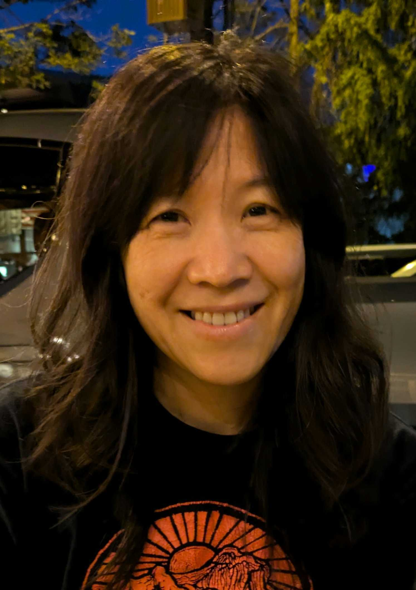

BIOINFORMATICS · GENOMICS · OPEN SCIENCE
Chao-Jen
Wong
Senior bioinformatician
I turn complex genomic data into insights that reveal disease mechanisms and guide therapeutic research.
With 15+ years in genomics and epigenomics and a Ph.D. in Mathematics, I partner with scientists on long-read sequencing, integrated multi-omic analysis, and reproducible Nextflow workflows.
View my resume
A PATH THROUGH SCIENCE
-
2023–PRESENT
Sarthy Lab, Seattle Children’s Research Institute
Senior Bioinformatician
Advanced long-read genomics for pediatric cancer research through nf-core/pacvar development, integrated variant and methylation analysis, and R tools for proteomics and CUT&RUN. Investigated epigenetic adaptation and mechanisms of drug response. -
2015–2023
Tapscott Lab, Fred Hutch
Bioinformatician III
Identified molecular signatures of FSHD disease activity and investigated immune infiltration in affected muscle. Developed biomarker panels to inform therapeutic targeting and clinical trials. Delivered four first-author papers. Founded a data science community to facilitate communication and mutual support across organizational silos at Fred Hutch, growing from 32 to more than 250 scientists in a year. -
2011–2015
Grady Lab, Fred Hutch
Bioinformatics Analyst II
Characterized cancer-associated DNA methylation patterns in colon tissue and collaborated on molecular aging models and studies of smoking-related prostate cancer outcomes. -
2008–2011
Gentleman Lab, Fred Hutch
Bioconductor Core Developer
Built open-source genomic analysis infrastructure and flow cytometry normalization methods as a Bioconductor core developer; reviewed more than 50 package submissions. -
2007–2008
San Diego State University
Postdoctoral Researcher
Researched numerical methods and microarray analysis, studying partial differential equations and links between antidiabetic medications and cardiovascular disease. -
2006–2007
Pacific Nanotechnology
Analytic Consultant
Developed atomic force microscopy reconstruction algorithms to correct probe-tip imaging artifacts, resulting in a peer-reviewed publication. -
2000–2005
Jet Propulsion Laboratory
Academic Part-Time Engineer
Developed a deep-space telecommunication forecaster tool in MATLAB for NASA missions, including the Mars rovers Spirit and Opportunity; co-authored JPL’s DESCANSO technical volumes.